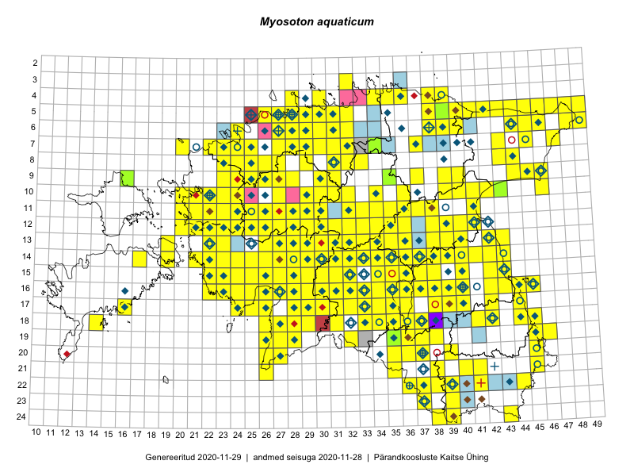

Myosoton aquaticum
Uuendatud: 2016-12-01
Kaardile koondatud taksonid: Myosoton aquaticum (L.) Moench

Kaart põhineb 292 kirjel, neist vaatlusi 287 ja eksemplare 5.
Kuvatud viited 20 esimesele andmebaasikirjele, ülejäänud PlutoFis
- Thea Kull: 2015-07-07: 16-40: ala
- Tiit Hallikma, Toomas Kukk: 2015-07-21: 05-45: ala
- Ott Luuk, Toivo Sepp: 2015-07-29: 09-31: ala
- Peedu Saar, Ott Luuk: 2015-06-21: 14-41: ala
- Ott Luuk, Peedu Saar: 2015-07-27: 11-35: ala
- Peedu Saar: 2015-07-04: 18-45: ala
- Peedu Saar: 2015-07-04: 18-44: ala
- Peedu Saar: 2015-07-14: 15-38: ala
- Toomas Kukk, Peedu Saar: 2014-07-09: 08-44: ala
- Toomas Kukk, Kersti Tambets, Sten Mander, Janika Sammasto, Timo Luhamäe: 2014-07-29: 18-45: ala
- Peedu Saar, Liina Oja: 2015-06-11: 16-29: ala
- Toomas Kukk, Eerik Leibak: 2015-07-29: 16-45: ala
- Peedu Saar, Liina Oja: 2015-07-20: 08-44: ala
- Peedu Saar, Liina Oja: 2015-07-21: 06-44: ala
- Ott Luuk, Toivo Sepp: 2015-07-12: 10-31: ala
- Toomas Kukk, Eerik Leibak: 2015-07-29: 16-44: ala
- Tiit Hallikma, Toomas Kukk: 2015-06-10: 15-30: ala
- Toomas Kukk, Tiit Hallikma: 2015-06-10: 15-31: ala
- Peedu Saar, Liina Oja: 2015-07-24: 09-45: ala
- Peedu Saar: 2015-08-04: 14-36: ala